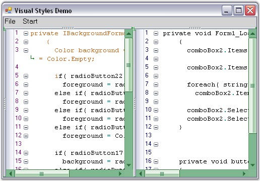

Edit Control enables to provide Office 2007 appearance to scroll bars by setting the ScrollVisualStyle property to Office2007.
It supports all the three Office 2007 Color Schemes (Black, Blue and Silver), which can be set by using the ScrollColorScheme property. Also, custom colors can be applied to the scroll bars of the Edit Control. This can be done by setting the ScrollColorScheme property to Managed.
|
Edit Control Property |
Description |
|
ScrollVisualStyle |
Specifies the visual style of the scroll bar. |
|
ScrollColorScheme |
Specifies the scroll bar color scheme when Office2007 or Office2007Generic Style is set. The options provided are
· Black · Blue · Silver · Managed |
|
[C#]
this.editControl1.ScrollVisualStyle = ScrollBarCustomDrawStyles.Office2007; this.editControl1.ScrollColorScheme = Office2007ColorScheme.Blue;
// Set custom color for the scroll bar. this.editControl1.ScrollColorScheme = Office2007ColorScheme.Managed; Syncfusion.Windows.Forms.Office2007Colors.ApplyManagedColors(this, Color.Green); |
|
[VB.NET]
Me.editControl1.ScrollVisualStyle = ScrollBarCustomDrawStyles.Office2007 Me.editControl1.ScrollColorScheme = Office2007ColorScheme.Blue
' Set custom color for the scroll bar. Me.editControl1.ScrollColorScheme = Office2007ColorScheme.Managed Syncfusion.Windows.Forms.Office2007Colors.ApplyManagedColors(Me, Color.Green) |
The following illustration shows the Edit Control with custom color (green) set for the scroll bars.

Figure 52: Edit Control with ScrollColorScheme property = "Managed"
 ToolTip
ToolTip